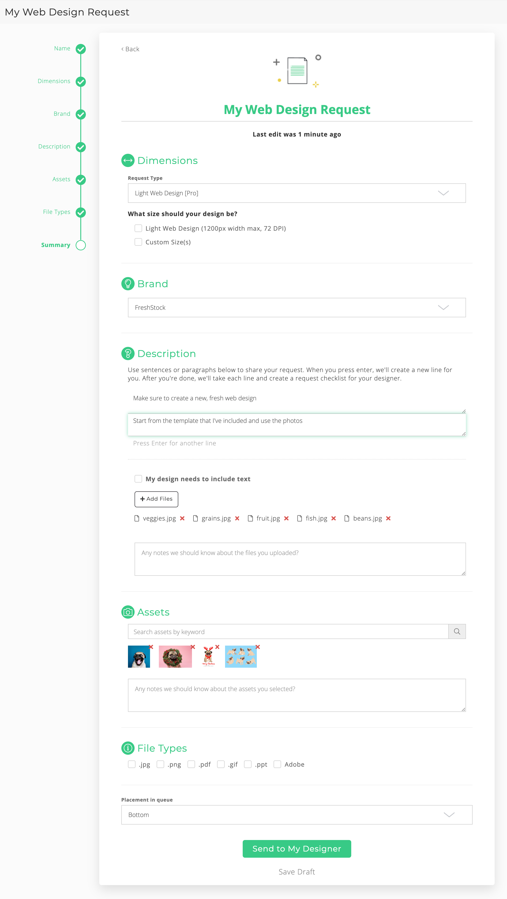

Senior Ruby on Rails Engineer
Grand Rapids, MI
In July 2018, the Design Pickle request form was a 1-page form with 6 input fields. It was basic, simple, and rigid.
There were several big areas of improvement I saw and very quickly made to the form.
It turned out that allowing editing and auto-saving of drafts had some unforeseen complications. One of these complications was when multiple people shared a login and started modifying the same request at the same time. Once I identified this problem, I chose to simply kick the second editor off of the request as a quick fix to the issue. There was also a problem when detail tasks were added or removed — generating, saving, and deleting one-to-many associations was not as simple as it seemed with Rails / ajax. Eventually, after troubleshooting multiple scenarios, I was able to resolve that problem as well.
Saving all request information was a huge improvement that opened up many future opportunities. Not only did it allow saving drafts and editing them after submission, it also allowed for data analysis and transparency into what customers were requesting / how many of each type of request we were completing, the ability to move off of a 3rd party platform and eventually save nearly $100,000 per year by building it internally, and allowing request details to be turned into a checklist for designers in order to improve design quality and completeness.
The technical / structural modifications around the request form was probably the single biggest contribution I made at Design Pickle because of the combination of cost savings, customer experience improvement, and the opportunity for future capabilities.
